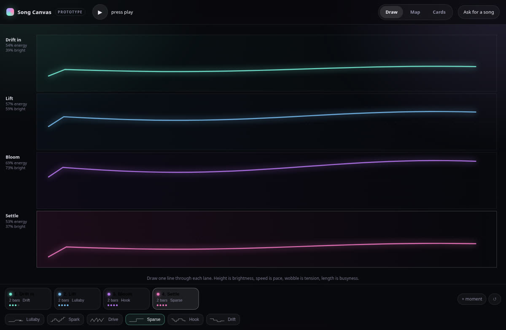

Prototype 01Three lenses
Draw a contour per section, drag moments around a calm/intense field, or shape them with abstract dials. Four sections loop with fills between them, riff tiles can be voiced by any instrument, and a text brief can sketch a full arrangement.
Web Audiono build step4 sectionslocal AI sketch
Open prototype →